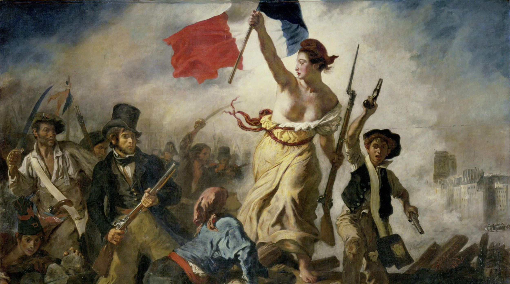

Hi, I'm a creative developer in the field of inclusive design. I'm passionate about creating immersive and engaging experiences, and want to make it better for everyone. My approach emphasizes authenticity and realities, to define brand success. I aspire to work with companies and agencies around the world, creating web user interfaces and digital products with a focus on responsive design, accessibility, performance and cutting-edge technologies.
And I consider myself completely lucky to be able to I'm play my small part in shaping the future of the web.
My ambition is to forge my career by creating various websites, while acquiring expertise in a multitude of user interface languages. My goal is to become a creative development specialist. I would like to integrate harmoniously into existing teams of developers, to the point where I am required to lead a complex project alone.

(AVAILABLE FOR NEW PROJECTS ✅)

(Click here ☝️ )

In my opinion, the key to exceptional website design depends on the developer, because an exceptional website transcends simple aesthetics and extends its influence to encompass seamless functionality and user-friendly navigation. Drawing on my drive as a passionate programmer, I possess the ability to tackle technical challenges while creating websites that exude elegance and visual appeal. Additionally, my desire to delve deeper into my techniques to complement my mastery of modern construction practices, ensuring that every aspect of your website is finely tuned to perfection.